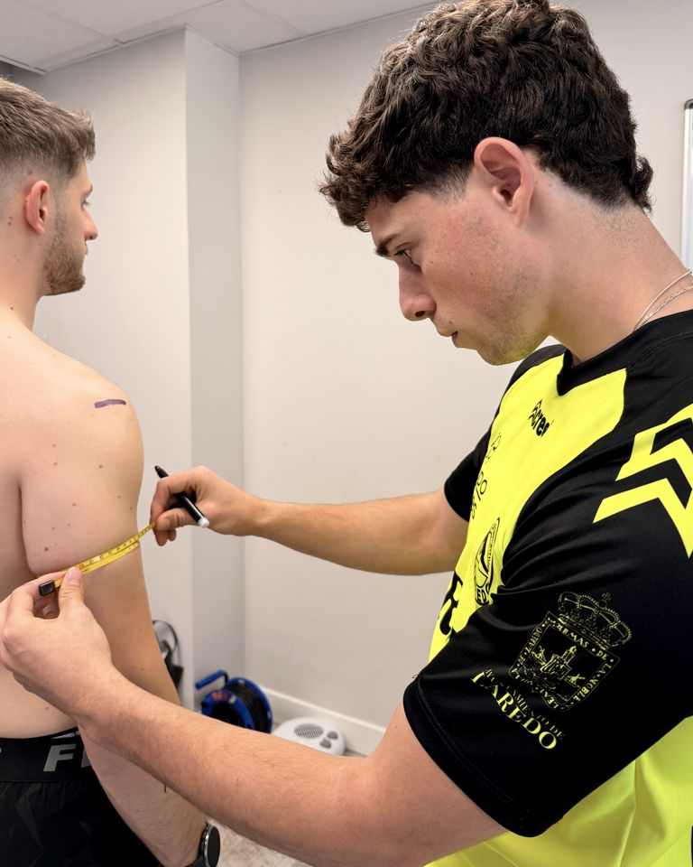
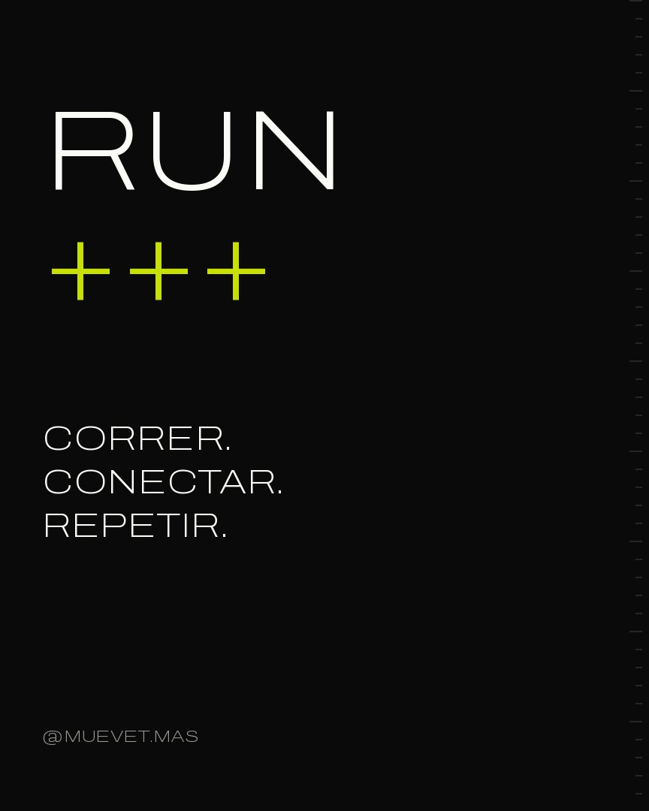

Antropometría ISAK
Una evaluación completa de tu composición corporal con el protocolo internacional ISAK. No es solo medir: es conocer tu punto de partida con datos objetivos, para decidir mejor tu entrenamiento y tu nutrición.
MUÉVETE MÁS · VIVE MEJOR · CANTABRIA
Movimiento, ciencia y comunidad. Un ecosistema para entrenar con criterio, correr acompañado y progresar de verdad.
No creemos en entrenar por entrenar.
Creemos en entender.
Datos reales para decidir mejor. Progreso poco a poco. Y disfrutar del camino — porque de eso va moverse.

Una evaluación completa de tu composición corporal con el protocolo internacional ISAK. No es solo medir: es conocer tu punto de partida con datos objetivos, para decidir mejor tu entrenamiento y tu nutrición.
Nada de rutinas genéricas. Una planificación adaptada a ti, a tu contexto y a tus objetivos, con seguimiento real y ajustes según tu evolución.
ANTROPOMETRISTA ISAK NIVEL 1 · CAFYD
Escríbeme y lo vemos →Un club de running social en Cantabria. La carrera es la excusa: lo importante es quién corre a tu lado. Da igual tu ritmo — aquí no se viene a competir, se viene a compartir el movimiento.
QUEDADAS ABIERTAS A TODOS LOS NIVELES · SE ANUNCIAN EN INSTAGRAM
Únete al grupo →EN DESARROLLO
La evolución natural de MUEVET+: conectar entrenamiento, datos y progreso en un mismo lugar. Cuando esté listo, lo sabrás aquí y en @muevet.mas.
No vendemos rutinas: diseñamos sistemas. Tres puntos de entrada al método MUEVET+, según dónde estás hoy.
Antes de entrenar, entiende.
Tu composición corporal medida con el protocolo internacional ISAK. No es medir: es convertir tu punto de partida en datos con los que decidir.
PROTOCOLO INTERNACIONAL ISAK · DATOS OBJETIVOS
Tu entrenamiento, con sistema.
Un plan diseñado para ti — tu contexto, tu objetivo, tu vida — que evoluciona contigo. Nada genérico: decisiones con criterio, semana a semana.
SEGUIMIENTO REAL · AJUSTES SEGÚN TU EVOLUCIÓN
EL SISTEMA COMPLETO
Un verano. Todo el método.
El programa más completo del ecosistema: punto de partida, método y acompañamiento de principio a fin. Para quien va en serio.
ANÁLISIS + MÉTODO + ACOMPAÑAMIENTO

MUEVET+ nace en Cantabria. Si no estás cerca, escríbeme igualmente y vemos tu caso.
Escríbeme por Instagram a @muevet.mas. Cuéntame tu objetivo y hablamos.
Una valoración de tu composición corporal siguiendo el protocolo internacional ISAK: mediciones precisas y estandarizadas que convierten tu punto de partida en datos objetivos.
No. RUN+++ es un club social: da igual tu ritmo. Las quedadas se anuncian en Instagram y están abiertas a todos los niveles.